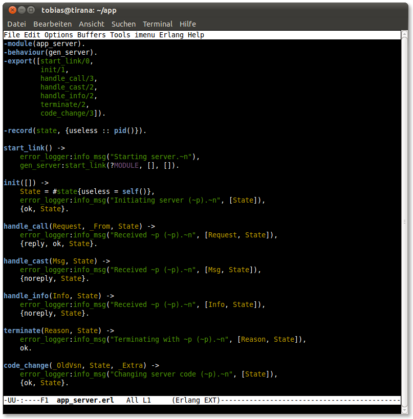
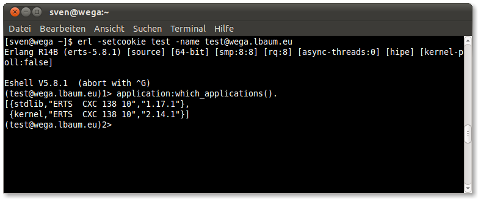
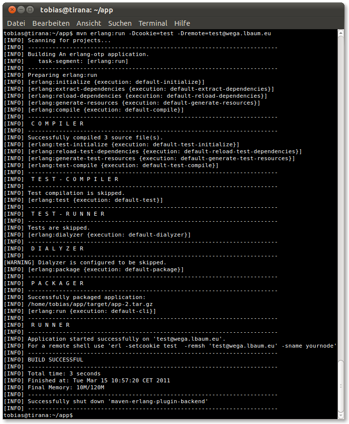
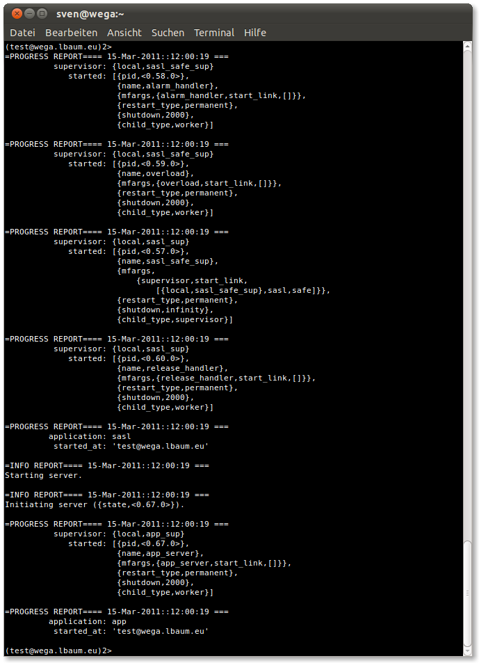

Running a basic application for testing purposes is fairly easy. First of all we'll need an application project. For this example we'll use the application we already used in the release packaging example.
Test setup
Our test project app consists of three modules. An application callback, a top-level supervisor and a test server.


The application resource file app.app and the application upgrade file app.appup for this application are listed below. Please note that we have to add the correct start module for non-library applications.
app.app:
{application, ${ARTIFACT},
[{description, ${DESCRIPTION}},
{id, ${ID}},
{vsn, ${VERSION}},
{modules, ${MODULES}},
{maxT, infinity},
{registered, ${REGISTERED}},
{included_applications, []},
{applications, [kernel, stdlib, sasl]},
{mod, {app, []}},
{env, []},
{start_phases, []}]}.app.appup:
{${VERSION}, [], []}.The plug-in provides two possibilities of running an application project. The local mode will run the application (and its transitive dependency applications) on the local machine using the plug-in's own backend node. The remote node will upload all needed code to a specified node, load the application files and start the application(s).
Local mode
The basic command mvn erlang:run will run the application in local mode.

As soon as the application's have been started the build will be paused so the user can interact with the running application. Node credentials will be printed. To shutdown the previously started applications simply hit ENTER to complete the build.

Remote mode
To run an application project in remote mode the remote node must be specified. Please note that the remote node must be running before invoking the run command. For this example we will use the node test@wega.lbaum.eu. As can be seen there are no applications running except the vital applications kernel and stdlib.

Now running the application using mvn erlang:run -Dcookie=test -Dremote=test@wega.lbaum.eu issues the following output. Again the credentials of the remote node are printed.

Changing back to the remote node we can see that sasl was started as a dependency of app.

Now we can interact with the running application, e.g. by sending a message to the started app_server process.